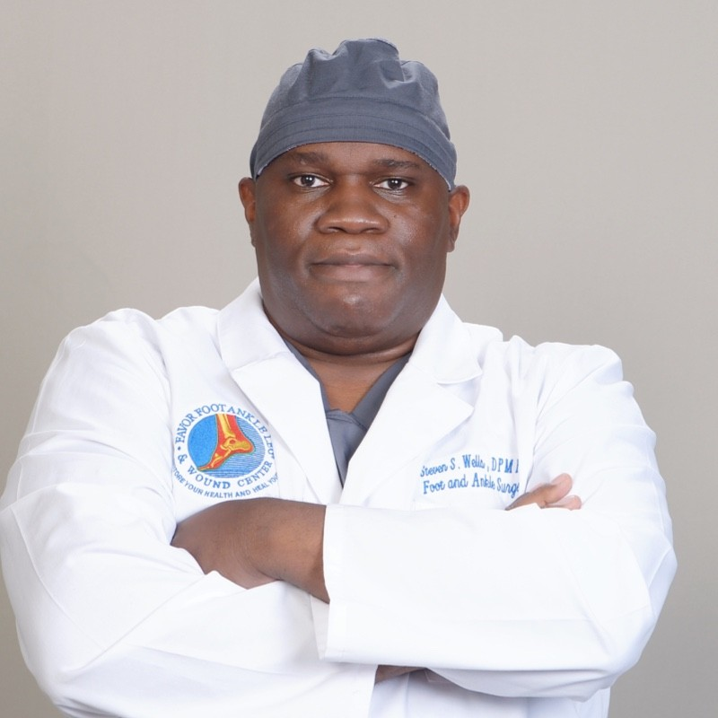

Featured area of care
Diabetic Foot & Wound Care
Specialized care for chronic, diabetic and complex lower-extremity wounds with a focus on healing, protecting tissue and preserving mobility.
Explore Wound CareYour feet carry you through work, family, movement and everyday life. When pain, wounds or complex lower-extremity problems interfere, specialized care can help you move forward with confidence.
From gout and persistent foot pain to diabetic foot problems, chronic wounds, skin and nail concerns, sports injuries and complex lower-extremity conditions, our clinical team evaluates the problem and helps determine the appropriate next step.
Specialized care for chronic, diabetic and complex lower-extremity wounds with a focus on healing, protecting tissue and preserving mobility.
Explore Wound CarePersistent pain, arthritic conditions and problems affecting comfortable movement.
Find related careFoot conditions associated with diabetes, including complex problems requiring close attention.
Find related careComplex lower-extremity wounds and care centered on healing and tissue protection.
Explore wound careSports injuries and foot or ankle problems that interfere with activity and mobility.
Find related careWarts, fungal nails, foot tumors and other podiatric dermatology concerns.
Find related careEvaluation and care for pediatric foot problems affecting developing mobility.
Find related careCare is built around understanding the individual problem first, then selecting an appropriate strategy—from conservative measures when appropriate to advanced treatment for more complex conditions.
Listen to the concern and understand how it is affecting daily life and mobility.
Combine clinical evaluation and diagnostic information to identify the underlying problem.
Match treatment to the condition, from conservative care to advanced interventions when appropriate.
For complex conditions, keep healing, tissue protection, function and mobility at the center of care.
Our services span routine and complex conditions, with specialized treatment options selected around the patient's needs.
Specialized care for chronic, diabetic and complex wounds with a focus on healing, tissue protection and mobility.
Explore wound careAdvanced treatment approaches designed to support tissue recovery and selected musculoskeletal conditions.
Explore servicesModern diagnostic tools help the clinical team better understand structure, function, circulation and contributing factors.
Explore diagnosticsSurgical and nonsurgical options, including reconstructive care, orthotics and bracing when appropriate.
View all services
Dr. Wells has been providing podiatric care since 1997, with a clinical focus that includes limb salvage, diabetic foot reconstruction, wound care, foot and ankle surgery, sports medicine and other complex lower-extremity conditions.
Access the information and resources you need before or after your appointment, from scheduling and forms to insurance, preparation and frequently asked questions.
“Thoughtful care begins with understanding the problem.”Learn about our approach
Whether you are requesting an appointment, have a referral, or need help connecting with our office, our team is here to help you understand the next step.